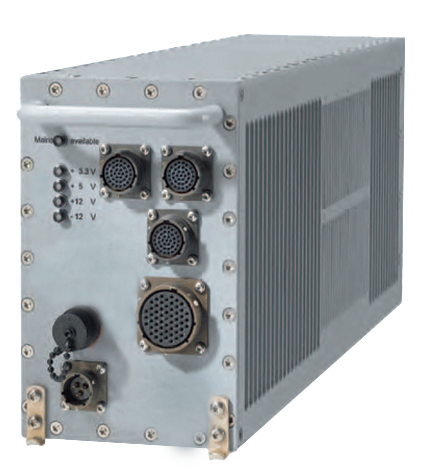
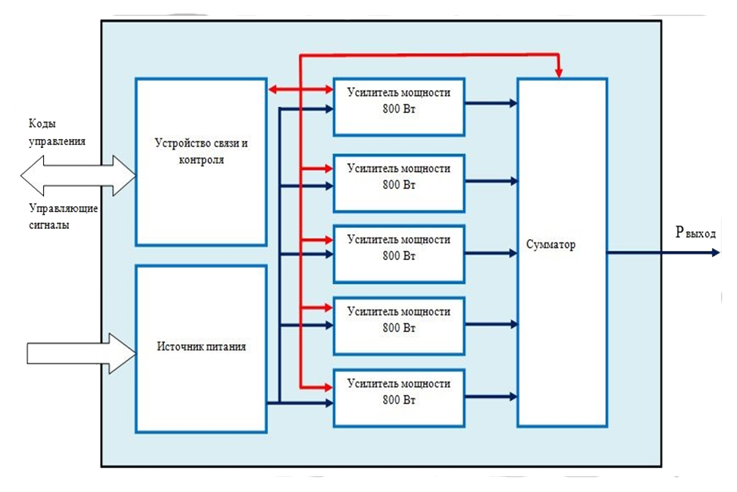
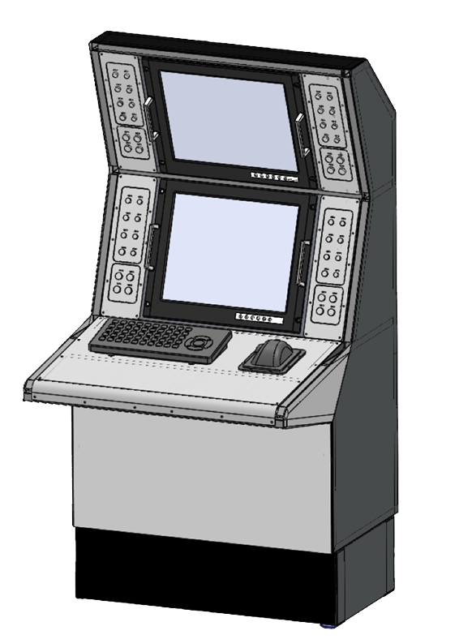

Description
The radar landing system of the RSP-10MR aircraft includes:
- landing radar (PRL-10MR);
- dispatching radar (DRL-10MR);
- automatic direction finder MV range.
During the work on the modernization of the radar landing system of the RSP-10MR aircraft, the following results are achieved:
- providing unprotected support of aircraft in simple and difficult weather conditions during day and night. At the same time, the most actual is the replacement of transceiver devices with new ones assembled using solid-state radio elements;
- reduction of errors in measuring the coordinates of escorted aircraft when they are brought to the aerodrome area and controlling their decrease due to the use of cutting-edge software methods for processing radar information on the basis of specialized computers for industrial use;
- ensuring the consistent withdrawal of aircraft at the rate of landing and glide path planning and ensuring their landing on the runway (runway) of the aerodrome in simple and difficult weather conditions;
- automation of the detection and tracking of aircraft. For this purpose, it is necessary to introduce automated workstations of operators on the basis of specialized computers into RSP-10MR. The main tasks of specialized computers will be automatic detection and tracking of aircraft;
- automation of the processing and transmission of data, as well as their documentation. The use of documenting and broadcasting functions in a specialized computer will allow to provide complete documentation of radar information, as well as of wire and radio communication channels;
- reduction of overall dimensions and weight of equipment;
- increase in resource potential and increase of reliability;
- improvement of ergonomics.
When upgrading the landing radar PRL-10MR will be performed the following works:
installation of a specialized computer (COMP), which consists of special digital computers (PCV) and the corresponding programmable adapters:
- SCW-1 - processing and synchronization adapter (synchronizes the transmitter-receiver unit and primary echo processing);
- SCW-2 - the adapter of the control of the block of the transceiver (carries out digitization of control signals of the transceiver unit);
- antenna position adapter (converts serial port of digital position sensors of RS-485 antennas to COM port standard);
- antenna control adapter (carries out hardware control of frequency converter blocks of electric drives of antennas).
The software complex SEVM PRL-10MM performs the following functions:
- final processing of echoes, including clearing of interference, selection of moving targets and allocation of a track of aircraft;
- graphical display of course and glide path indicators and their combination with corresponding echo signals;
- building an interactive interface for control and monitoring of radar systems;
- support of a local network with the function of documenting information;
- interface with remote workstations.
Appearance of a specialized computer

Modernization of the radio transmitting device (RPU) provides for the replacement of radio electronic devices on vacuum radio cells with new ones, on solid-state radioelements in hermetic execution. The output stage of the power amplifier is a solid state transistor amplifier.
The RPU includes:
- transistor power amplifiers 800 W (5 pcs.);
- communication and control device;
- adder;
- source of power.
Appearance and functional diagram of the RPU unit on a solid-state transistor amplifier

Modernization of the radio receiving device.
Receiver solid-state landing radar (PАR) is made in three-channel design and provides operation in the frequency range of 9120 ... 9400 MHz.
Each receiving module contains:
- a luminous amplifier (LNA);
- mixers (SM);
- intermediate frequency amplifier (IF amplifier);
- intermediate frequency preamplifier.
Technical characteristics of the landing radar (PRL-10MR)
- Operating frequency range: X-band
- Output power, kW: 3
- Duration of the probe pulse, μs: 0.1…32
- Field of view:
- in azimuth, degrees.: -15o…+15o
- in range, not less than, km: 25
- by the angle of the place, degrees: –1o…+8o
- Mean square error of the coordinate measurement:
- range, m, no more than: 5
- azimuth, degrees, no more than: 0.03
- Resolution in range, m, no more than: 40
- Sensitivity:
- with a pulse of 0.2 μs - not worse, dB/W: 128
- at a pulse of 0.5 μs - not worse, dB/W: 132
- Dynamic range of the receiver, dB: 87
- Noise factor - not worse, dB: 3.5
- Bandwidth of AFC, MHz: 6 ± 1
- Intermediate frequency, MHz: 60
Installation of the operator's automated workplace
Radar information is displayed on TFT monitors AWP in separate windows of the course channel indicators and glide path with nonlinear logarithmic scanning. In the course and glide path indicators windows:
- range marks;
- azimuth labels;
- preset course and glide path lines;
- lines of lateral/horizontal deviations;
- lines of equal height;
- position of the glide path antenna (in the course window);
- position of the course antenna (in the glide path window);
- echo signals;
- track and airplane form with indication of deviations from course lines / glide path in measures (option).
Diagnostic information is displayed in a separate diagnostic window and contains:
- control of the readiness of the transmitter to switch on the radiation;
- control of microwave radiation in the course channels and glide path;
- threshold temperature indicator of the transmitter;
- threshold indicator for reducing the pulsed power of the transmitter.

Back to Main